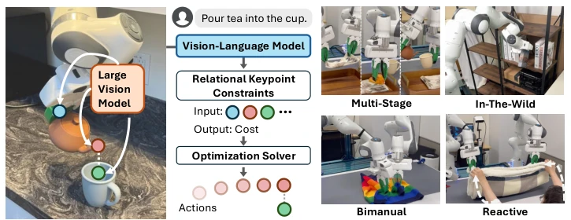
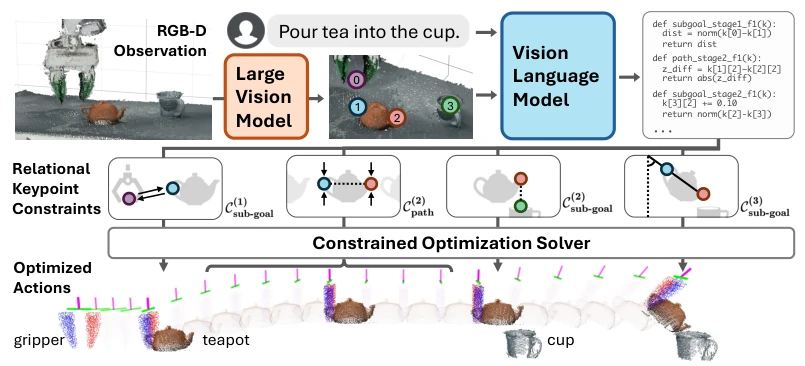
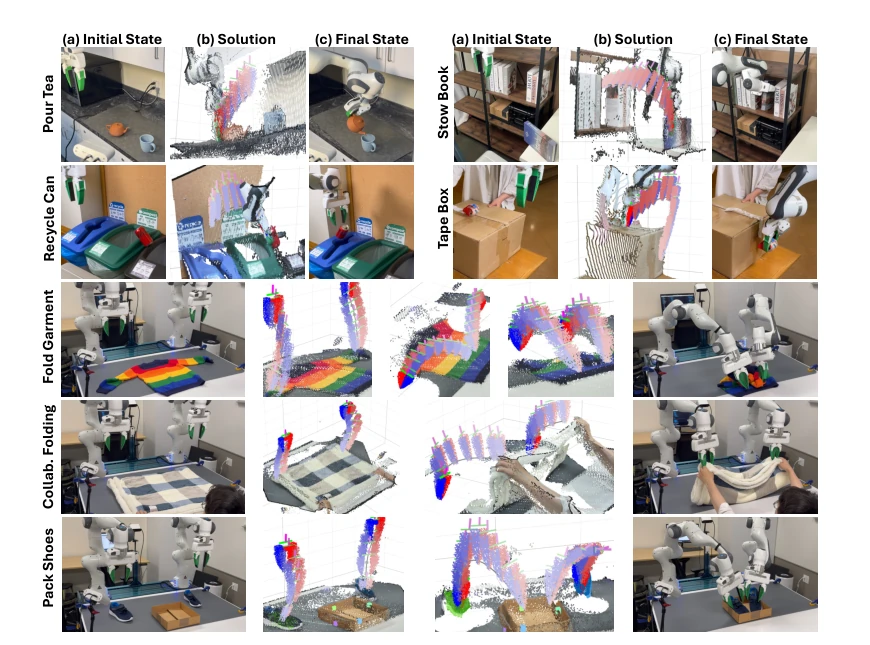
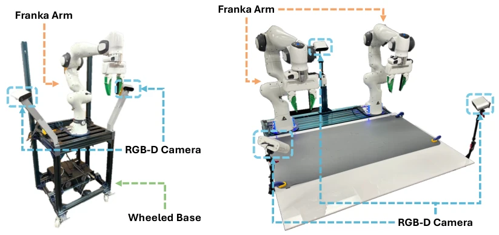
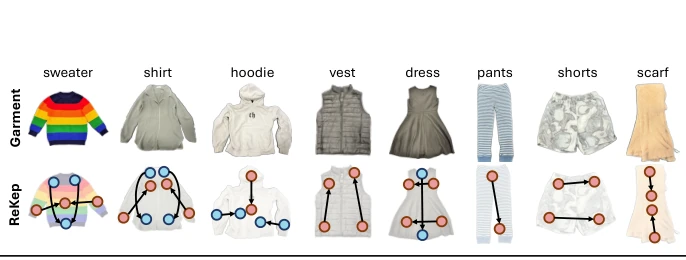
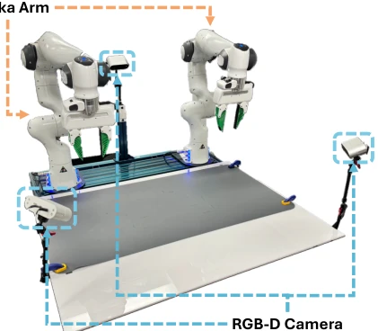
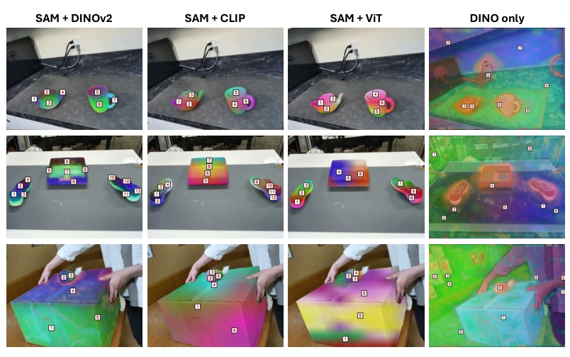
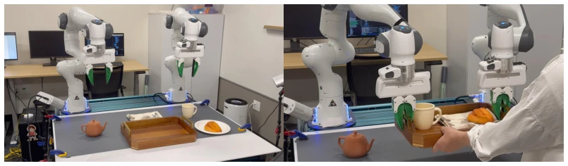
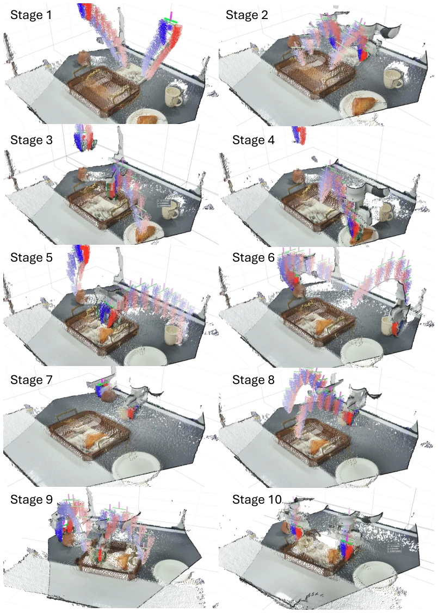

This paper attempts to unify task representation for robot manipulation using "Relation Keypoint Constraints" (ReKep), which sounds promising, turning tasks into Python functions that are both flexible and usable with off-the-shelf solvers. However, upon closer inspection, the core still relies on large models (DINOv2 + GPT-4o) to "guess" constraints, essentially outsourcing the planning problem to a black box. Although the authors emphasize real-time performance and zero-shot capability, the success rate in experiments (68.6%) remains fragile in the face of complex tasks. The most significant drawback lies in the over-reliance on keypoint tracking; once occluded, it fails, and the rigid assumption limits deformable objects. The so-called "automated constraint generation" actually just shifts the trouble of manual annotation to the hallucinations of VLMs, raising doubts about stability. However, the idea of combining semantic keypoints with optimization solvers does provide a new interpretable path for Task and Motion Planning (TAMP), worth trying in specific scenarios.
Robot manipulation involves complex environmental interactions, typically expressed as spatiotemporal constraints. Existing methods face three major challenges: first, rigid body pose representation cannot handle deformable objects and requires prior models [1, 8-18]; second, data-driven methods are flexible but the number of constraints grows exponentially with object and task combinations, making it difficult to collect training data [2, 3]; third, traditional constraints require manual writing and lack open-world scalability [4]. The authors hope to find a constraint representation that can adapt to complex behaviors such as multi-stage, field, and two-handed collaboration, can be automatically acquired through foundation models, and can be real-time optimized by off-the-shelf solvers. This aims to solve the problem of disconnection between task planning and motion planning in existing TAMP frameworks, as well as the difficulty in generalizing and automatically generating constraints.

Figure 1: Relational Keypoint Constraints (ReKep) specify diverse manipulation behaviors as an opti- mizable spatio-temporal series of constraint functions operating on semantic keypoints. In the pouring task, one ReKep first constrains the grasping location at the handle of the teapot (blue). A subsequent ReKep pulls the teapot spout (red) towards the top of the cup opening (green) while another ReKep constrains the desired rotation of the teapot by associating the vector formed by the handle (blue) and the spout (red).
The overall process is divided into two stages: constraint generation and optimization execution. First, DINOv2 is used to extract image features, combined with SAM segmentation mask clustering to generate 3D keypoint proposals. Subsequently, keypoints overlaid on images and language instructions are input into GPT-4o to generate Python functions describing spatial relationships between keypoints (such as distance, dot product) as ReKep constraints. Constraints are divided into subgoal constraints (must be satisfied at the end of the stage) and path constraints (must be satisfied within the stage). The optimization stage adopts a hierarchical strategy: first solve for the next subgoal pose, then solve for the dense action sequence to reach that goal, using the SciPy solver, updating keypoint positions based on the rigid assumption, and correcting through visual tracking feedback. If path constraints are violated, backtracking occurs. This design decouples high-level semantic reasoning from low-level motion control, explicitly expressing constraints in code form, facilitating solvers to handle nonlinear relationships.

Figure 2: Overview of ReKep. DINOv2 [5] first proposes keypoints in the scene, which are overlaid on the original RGB image. The image and an instruction are fed into GPT-4o [6] to generate a series of ReKep constraints as python programs that specify desired relations between keypoints at different task stages (C(i) sub-goal) and any requirement on transitioning behaviors within stages (Ci path). Finally, dense sequence of end-effector actions are obtained by solving the optimization problem subject to generated constraints.
实验Experiments
在单臂移动和双臂固定平台上测试了7类任务，包括倒茶、收纳书籍、折叠衣物等。对比基线VoxPoser和自动标注（Auto Annot），ReKep在成功率上显著领先（68.6% vs 44.3% vs 10.0%）。在外部扰动下，ReKep也能保持较高成功率（46.7%）。消融分析显示，关键点跟踪模块是主要误差来源，其次是关键点提案和VLM生成。实验证明了系统能处理多阶段依赖和双手协作，如折叠不同衣物策略。但受限于跟踪精度和刚性假设，在严重遮挡或形变场景下表现下降。
Tested on 7 types of tasks on single-arm mobile and dual-arm fixed platforms, including pouring tea, storing books, folding clothes, etc. Compared with baselines VoxPoser and Auto Annot, ReKep significantly leads in success rate (68.6% vs 44.3% vs 10.0%). Under external disturbances, ReKep can also maintain a high success rate (46.7%). Ablation analysis shows that the keypoint tracking module is the main source of error, followed by keypoint proposals and VLM generation. Experiments prove that the system can handle multi-stage dependencies and two-handed collaboration, such as strategies for folding different clothes. However, limited by tracking accuracy and rigid assumptions, performance degrades in scenarios with severe occlusion or deformation.

Figure 3: Experiment tasks and visualization of optimization results. Seven tasks are designed to validate different aspects of our system, including in-the-wild specification with commonsense knowledge, multi-stage tasks with spatio-temporal dependencies, bimanual coordination with geometric awareness, and reactiveness when collaborating with humans and under disturbances.

Figure 6: Wheeled Single-Arm Platform.
其他图片Other Figures

Figure 5: Novel bimanual strategies of ReKep for folding different categories of garments and their success rates. Since ReKep in this task always associates two points at a time, two keypoints are connected by an arrow if they need to be aligned. The coloring of the keypoints denotes the order. In the sweater task, two sleeves are first folded simultaneously with two arms, and then the two arms grasp the crew neck to align to the bottom.

Figure 7: Stationary Dual-Arm Platform.

Figure 8: Comparisons of different methods for keypoint proposal.

Figure 9: Initial configuration and successful final configuration of the preparing breakfast tray task.

Figure 10: Solution visualization of the preparing breakfast tray task.